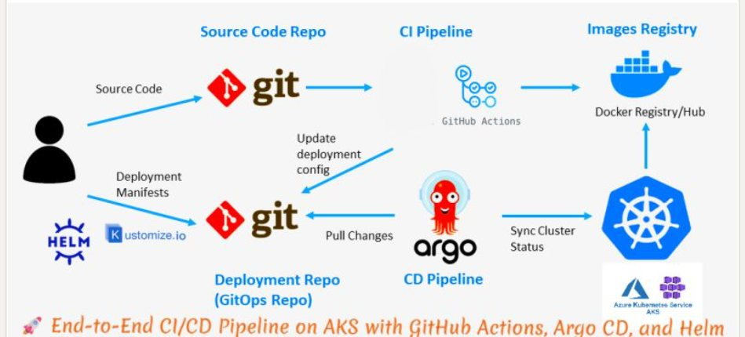
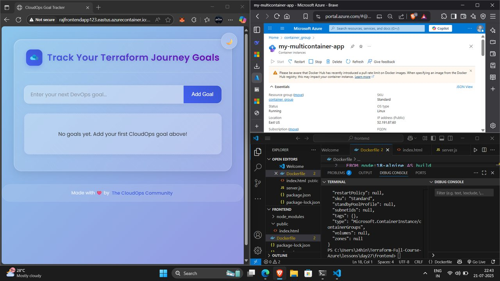
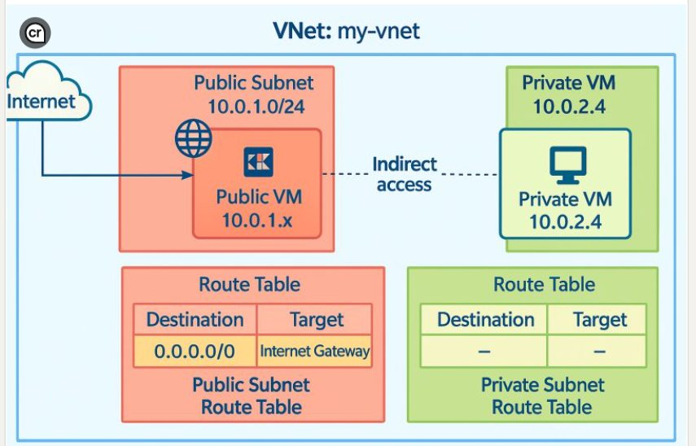

Open to cloud & infrastructure roles
Rajesh
Cloud Analyst · Azure Infrastructure & Incident Support · Microsoft 365 Administration
I support Azure infrastructure, networking and Microsoft 365 environments for international clients — the primary point of contact for incidents and service requests, troubleshooting platform issues and driving resolution within SLA. Certified on AZ-900 and OCI Foundations, currently working toward AZ-104.
3Certifications
58Public repos
SLADriven support
01 — About
What I actually do
I am a Cloud Analyst at AW Infrasec Solutions Pvt. Ltd. in Gurugram, where I am the first point of contact for international clients on Microsoft 365 and Azure incidents, service requests and technical escalations — resolved through Zoho Desk, within SLA.
Day to day that means managing Azure VMs, VNets, subnets, NSGs and Storage accounts, watching infrastructure health through Azure Monitor and Workbooks, and owning Identity and Access Management via Microsoft Entra ID — provisioning, role assignments and access reviews — alongside Intune enrolment and compliance policies, Defender security alerts and Purview data governance.
I write Python and Bash to provision Azure VMs end to end: deployment, client connectivity, subnet and NSG rule priority, and SQL-based storage. I have supported real-time data pipelines across Event Hub, Data Factory, ADLS and Synapse Analytics using Medallion Architecture with Key Vault managed secrets — and I built an internal automation tool that reduced manual effort for the L1 team.
02 — Skills
Technical toolkit
Identity & Security
Microsoft 365
Data & Pipelines
Backup & Recovery
DevOps, Containers & Scripting
Support & Ticketing
03 — Projects
Featured work
Cloud and DevOps projects I designed and built myself, plus the client migrations I led at work.
Projects I built

Personal projectEnd-to-End CI/CD Pipeline on AKS
A fully automated GitOps pipeline for a Go web application. A push to main triggers GitHub Actions to build, test and lint, then tags and pushes the image to DockerHub. The Helm chart auto-updates the image tag, Argo CD detects the change and syncs it to AKS, with an NGINX Ingress Controller handling routing — rollbacks included.

Personal projectContainerized Full-Stack App on Azure
Containerised a production-ready app with Docker, pushed the image to a private Azure Container Registry, and deployed it to Azure Container Instances using the Azure CLI — resolving image access failures and port mismatches, configuring DNS name resolution for public access, and managing autoscaling rules on Container Apps.
View repository
Personal projectPublic–Private Subnet Architecture with Jump Host
Built a secure multi-subnet VNet (10.0.0.0/16): a public subnet hosting a jump host with a public IP, and a private subnet running an Nginx web server with no internet exposure. The private VM is reachable only through the jump host acting as a reverse proxy, enforced with custom route tables and NSGs.
Personal project
Real-Time Healthcare Analytics Dashboard
End-to-end real-time analytics on Azure: streaming ingestion through Event Hub, processing in Databricks notebooks, and a bronze–silver–gold Medallion Architecture in ADLS. SQL views and a star schema in Synapse feed interactive Power BI dashboards, with Key Vault managing secrets and Azure Monitor handling pipeline alerts.
View repository
Personal project
Azure Network Virtual Appliance & Segmentation
Deployed a three-tier VNet — DMZ, public and private subnets — with an Ubuntu 22.04 Network Virtual Appliance inspecting all inter-subnet traffic. User-Defined Routes force traffic through the NVA, where iptables permits HTTP/HTTPS and SSH while blocking database access, giving microsegmentation and centralised logging.
Personal project
Azure Backup & Disaster Recovery
Designed and tested a full backup and DR strategy for a Linux VM on Azure: centralised backup management through a Recovery Services Vault, automated and on-demand backup jobs, verified recovery points, and disaster recovery drills to confirm fast failover with minimal downtime.
Personal project
Terraform AWS Infrastructure
A modular, production-style Terraform project automating AWS provisioning with custom modules for EC2, S3, RDS, DynamoDB and an Nginx setup. Uses an S3 remote backend for secure state management, a clean reusable directory structure, and optional EKS support.
View repository
Personal project
Multi-Container Stack with Docker Compose
A production-shaped multi-container environment orchestrated with Docker Compose: a Flask backend served by Gunicorn as the WSGI server, behind Nginx acting as reverse proxy and static file server.
Personal project
GitLab CI/CD for a Node.js App
A GitLab CI/CD pipeline automating build, test and deployment of a Node.js application across three stages — dependency install, automated tests to hold code quality, and deployment — cutting manual effort and enabling continuous integration.
Migrations I led at work
Client work
Google Workspace → Microsoft 365 Migration
Led end-to-end migration of international client mailboxes and OneDrive data from Google Workspace to Microsoft 365 with minimal downtime — covering mailbox transfer, calendar and contact continuity, and user and licence provisioning.
Client work
Hybrid Azure AD → Microsoft Entra Join
Migrated international client devices from Hybrid Azure AD Join to Microsoft Entra Join using the Opsole Migration Tool — pre-migration validation, execution, troubleshooting and post-migration verification, reducing on-premises AD dependency.
More on GitHub
k8sMinikube and KIND — Deployments, StatefulSets, PV/PVC, Helm, Jenkins CI/CD
3-tier-appsGo API, Node frontend and PostgreSQL in a clean three-tier architecture
FRPC via CloudflaredSecure tunnelling to expose internal services without opening ports
EduMateriaHubLaravel and MySQL study platform, role-based auth, full CI/CD
Network Traffic AnalysisPacket capture and analysis built on libpcap
SubNettingSubnetting fundamentals worked through with practical examples
Mastering DSADaily data structures and algorithms challenges in C++
04 — Experience
Where I have worked
Nov 2025 — Present
Cloud Analyst
AW Infrasec Solutions Pvt. Ltd. · Gurugram, India
- Primary point of contact: first responder for international clients on Microsoft 365 and Azure incidents, service requests and technical issues, resolving tickets via Zoho Desk within SLA.
- Azure infrastructure and monitoring: manage Azure VMs, VNets, subnets, NSGs and Storage accounts; proactively monitor infrastructure health with Azure Monitor and Workbooks, troubleshooting connectivity and platform issues.
- Microsoft 365 administration: administer Exchange Online, SharePoint, OneDrive and user licence assignments; own IAM via Microsoft Entra ID (provisioning, role assignments, access reviews), Intune device enrolment and compliance policies, Defender security alerts and Purview data governance.
- Infrastructure automation: write Python and Bash scripts that provision Azure VMs end to end — deployment, client connectivity setup, subnet and NSG rule priority configuration, and SQL-based storage provisioning.
- Troubleshooting: diagnose and resolve cloud networking and platform-level issues — DNS, VPN, sign-in and email sync — across end-user and infrastructure environments using structured techniques.
- Backup and recovery: monitor and maintain Acronis Cyber Protect backups, configure backup policies and retention schedules, and execute data recovery for client environments.
- Real-time data pipelines: managed and supported real-time data pipelines and workspace access across Azure Event Hub, Data Factory, ADLS and Synapse Analytics with Medallion Architecture, Key Vault managed secrets and SQL-based analytics.
- Documentation and continuous improvement: used AI copilots and agent-based tools to speed up ticket triage and summarise recurring issues, and built an internal automation tool that reduced manual effort for the L1 team.
May 2025 — Jul 2025
Python Developer Intern
Shadow Fax Technologies
- Built scripts and REST APIs using Python and Flask for backend logic and JSON-based data processing.
- Developed an internal automation and reporting tool that streamlined recurring data workflows and reduced manual reporting effort.
- Collaborated in agile teams, contributing to sprint planning and code reviews.
Jul 2024 — Sep 2024
Marketing Intern
Open Wings Foundation · Delhi
- Contributed to content creation and marketing strategy, analysing trends and engaging stakeholders to deliver promotional campaigns.
05 — Credentials
Education & certifications
B.Sc. in Computer Science
University of Delhi
2023 — 2026
Coursework: Python, Data Structures, Operating Systems, Networking, Cloud Computing, Databases.
Azure Administrator Associate (AZ-104)
Microsoft
Expected 2026
Azure Fundamentals (AZ-900)
Microsoft
2025
OCI Foundations Associate
Oracle
2025
Verify badgeOpenStack Cloud Computing
Open Infrastructure Foundation
2024
AI Skills Fest 2026
Microsoft
2026
06 — Writing
Technical blog
I write about what I break and fix
Tutorials, project deep-dives and cloud administration notes on Microsoft 365, Azure infrastructure and IT support. Documenting the work keeps my own understanding honest, and gives the next person a shortcut.
Read on Hashnode07 — Contact
Get in touch
Open to cloud, Azure administration and infrastructure support roles. The fastest way to reach me is email.
- rk2998858@gmail.com
- +91 8447559286
- New Delhi, India